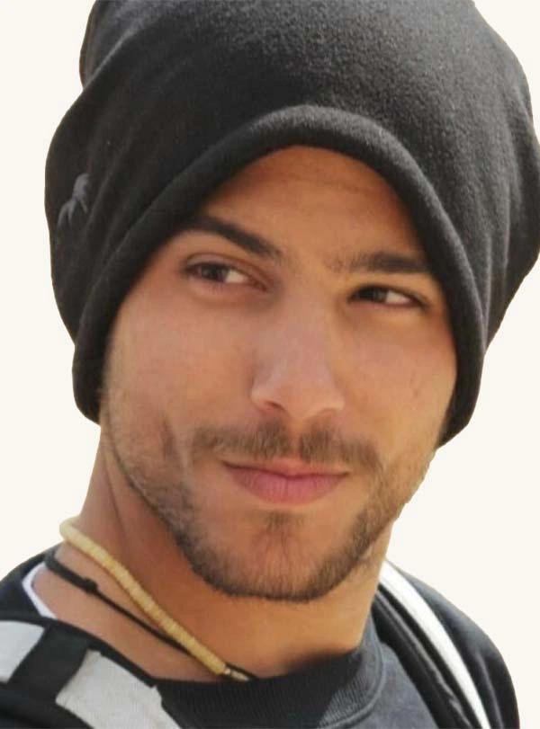

כפר עזה
אדמוני גיא ז"ל
סרן בחיל המודיעין, מפקד ואיש ערכים
סיפור חיים
גיא אדמוני ז״ל, בנם של מיכל ודורון, נולד בד׳ בטבת תשנ״ח, 2 בינואר 1998, בקיבוץ כפר עזה. הוא היה אח גדול לגלי, ואח למחצה ללי ורן.
גיא גדל בכפר עזה, בקבוצת אש״ל של בני גילו, ולמד במוסדות החינוך של המועצה האזורית שער הנגב מכיתה א׳ ועד י״ב. הוא היה ילד טבע יפה תואר, עם חיוך שובה לב, מנהיגות פנימית ודעתנות. בזכות יכולתו להוביל, לכוון ולהאיר דרך, כונה בקבוצתו ״המגדלור״.
מגיל צעיר אהב ספורט, ובמיוחד כדורסל. עד כיתה י׳ שיחק כדורסל, ובהמשך נשאר אוהד נלהב של קבוצת הפועל תל אביב בכדורגל ובכדורסל.
לצד שובבותו וחוש ההומור המשובח שלו, גיא היה נער רציני ומעמיק, ״נפש עתיקה״ בלשון חבריו. לימודי השואה השפיעו עליו מאוד, ובמסע לפולין בכיתה י״א הפגין ידע מרשים בקורות מלחמת העולם והשואה.
כאשר המחנכת שלו שאלה את תלמידיה היכן יהיו בעוד עשרים שנה, והשיבה קיבלה תשובות כמו רופא, עורך דין ואיש מחשבים, גיא ענה: ״או שאני אהיה ראש ממשלה או שאני אמות בשביל המדינה.״
לאחר שסיים את לימודיו בתיכון המשיך גיא לשנת שירות. בבקרים הדריך בעמותת ״עמיחי״ בהוד השרון, המסייעת לילדים עם נכויות קשות, ובשעות הצוהריים והערב התנדב במועדונית לילדים עם צרכים מיוחדים במעון לימן בכפר סבא.
אביו של אחד מחניכיו סיפר כי הגדולה של גיא הייתה בכך שבחר לעשות את שנת השירות במקום קשה ומאתגר, עם אוכלוסייה הזקוקה לליווי, סבלנות ומסירות יוצאי דופן. הוא תיאר את גיא כצעיר שעשה עבודת קודש בצורה מופלאה, ודאג שלחניכים יהיה כיף, נעים ובטוח.
אימהות של חניכים תיארו אותו כחייכן עם לב רחב ואנרגיות מדהימות, אדם שאפשר היה לסמוך עליו, ושידע להעניק ביטחון, חום ושמחה.
ביום 14 בדצמבר 2017 התגייס גיא לצה״ל ושירת באגף המודיעין, ביחידה טכנולוגית. כבר בתחילת דרכו ביחידה סימן לעצמו מטרה לצאת לקורס קצינים. הוא היה נחוש להגשים זאת, ולאחר שהתעקש ופעל בנחישות, יצא לקורס קצינים וחזר ליחידתו כקצין וכמפקד.
בהמשך יצא לקורס קמ״נים, קציני מודיעין, וכשסיים אותו שימש כמפקד צוות בקורס במשך שישה מחזורים. במסגרת ההכשרות לחניכיו שילב ביקור בקיבוצו, כפר עזה, והפגיש אותם עם אימו מיכל. היא סיפרה להם על משמעות החיים ליד הגבול, וגיא סיפר על חוויותיו כילד בעוטף - בין משחק כדורגל לריצה לממ״ד.
פקודו סיפר כי גיא היה מפקד יוצא דופן: מקצועי, אך קודם כול אנושי. מפקד שדאג לחייליו, לקצינים ביחידה ולמפקדיו. הוא האמין בשיח פתוח, בהקשבה ובחשיבות של גידול דור המפקדים הבא.
פקודים נוספים תיארו אותו כמפקד מדהים ואדם טוב לב, שהביא חיוך וערכים לכל מקום שאליו הגיע; אדם עם לב ענק, שתמיד הושיט יד לעזרה והתנהל בענווה. אחת החיילות ששירתה איתו כתבה כי היא זוכרת את החיוך שלו, את הרוגע שהשרה על סביבתו ואת האור בעיניו.
בתפקידו האחרון שירת גיא בלשכת ראש אגף המודיעין, כעוזר ראש הלשכה. ביולי 2023 קיבל דרגת סרן בטקס שבו נכחו משפחתו וחבריו. במעמד זה אמר: ״אני מקווה שבתקופה מורכבת כזאת, לכל אחד יהיה את המגדלור הקטן שלו, שגורם לו לחשוב בשביל מה הוא עושה את הדברים ומה מביא אותו לפה, כי יש לנו פה כוח אדיר.״
במהלך שירותו עבר גיא להתגורר בתל אביב ונהנה מהחיים בעיר הגדולה. הוא היה אנין טעם, אהב אוכל טוב, מסעדות ובתי קפה, ובהם גם טיפח את תחביב הכתיבה שלו וכתב לעצמו תובנות והגיגים.
לצד אהבתו לחיים המשיך לטפח את ערכיו - אהבת הארץ, ההתיישבות העובדת וההיסטוריה של עם ישראל. בשל כך כונה גם ״פלמ״חניק בנשמתו״. טעמו המוזיקלי כלל את שירי ארץ ישראל הישנה, והזמר האהוב עליו היה אריק איינשטיין, במיוחד ביצועו ל״שיר העמק״ של נתן אלתרמן.
גיא ונועה היו בני זוג במשך חמש שנים. נועה סיפרה שכמעט בכל סוף שבוע היו חוזרים לקיבוץ, ושגיא היה משקיע באחייניות שלו. בתקופה האחרונה התלבט אם להשתחרר מהצבא, ולבסוף החליט שהוא רוצה להשקיע יותר במשפחה, בחברים ובחיים האזרחיים. הוא יצא לחופשת השחרור כשהוא מלא תוכניות וחלומות.
יחד עם נועה הספיק לטייל בפריז, ותכנן לאחר שחרורו לטוס ל״טיול הגדול״ בארצות הברית אצל אחיו הגדול רן. בהמשך קיווה ללמוד תקשורת באוניברסיטת רייכמן ולהפוך לאיש תקשורת.
שבעה באוקטובר והימים שאחריו בבוקר שבת, שמחת תורה תשפ״ד, 7 באוקטובר 2023, חדרו מחבלים לקיבוץ כפר עזה במסגרת מתקפת הטרור הרצחנית על יישובי עוטף עזה.
גיא, שהיה בחופשת שחרור, שהה באותו בוקר בבית הוריו בכפר עזה, לבקשת אימו מיכל שלא חשה בטוב. אביו דורון היה באותה עת בביקור בחו״ל. כשהאזעקה העירה אותו משנתו, נכנס גיא עם אימו לממ״ד. בשעה 6:49 שלח לנועה הודעה: ״בוקר הזוי״. זו הייתה ההודעה האחרונה שקיבלה ממנו.
מחבלים שהגיעו לכפר עזה נכנסו לממ״ד המשפחה ורצחו את גיא ואת אימו מיכל. במשך ארבעה ימים הוגדרו השניים כמנותקי קשר, עד שלבסוף אותרו מחובקים, ללא רוח חיים, בממ״ד ביתם.
אביו סיפר: ״ידעתי שככה ימצאו אותם. אם למות יחד, אז רק ככה, מחובקים. היא לא עזבה אותו בחייה והוא לא עזב אותה גם במותם.״
סרן גיא אדמוני נפל בקרב בכ״ב בתשרי תשפ״ד, 7 באוקטובר 2023. בן 25 היה בנופלו. הוא הובא למנוחות בחלקה הצבאית בבית העלמין תל מונד. אימו מיכל ז״ל נקברה לצידו.
זיכרון ומילים מהלב בין כתביו של גיא נמצא הקטע: ״הזמן לא מעלים את הכאב ומשכיח אותו, הוא רק מחביא לנו אותו בחלק האחורי של הנפש, וכל כמה זמן הוא מזכיר לנו אותו כדי להראות לנו שהתגברנו, שצלחנו גם את הכאב הזה. למדתי מההתמודדות איתו משהו. כל כאב שנאסף בחלק האחורי הזה עוזר לנו לצמוח ולהתחזק ולהבין על עצמנו טוב יותר מי אנחנו ומה אנחנו מצפים מעצמנו לעתיד ולהווה.״
מפקדו ספד לו: ״לא היה לי עוד קצין ג׳נטלמן כמוך. היית עוגן משמעותי באגף המודיעין של צה״ל. נפלת לצד אימך מיכל. לימדת אותי הרבה על חשיבות מדינת ישראל ואזכור אותך תמיד.״
גיא מונצח באתרי המרכז למורשת המודיעין, במועצה האזורית שער הנגב ובאתר ״למלא את החלל״. לזכרו שודר פרק בהסכת ״עד המוות הפועל״ מטעם אוניברסיטת רייכמן, פרויקט הנצחה לאוהדי הפועל שנרצחו באסון 7 באוקטובר.
ביולי 2024 נערך במרכז הספורט ״נחלת יהודה״ בראשון לציון טורניר שער הנגב בכדורסל לזכר גיא ומיכל.
משפחתו החליטה להקים יקב ומרכז מבקרים בכפר עזה לזכרם של גיא ואימו מיכל.
גיא נזכר כמגדלור - בן, אח, בן זוג, דוד, חבר, קצין ומפקד. אדם של ערכים, עומק, הומור, מנהיגות ואהבת הארץ; צעיר שידע לחיות בעוצמה, להוביל בענווה, להאיר לאחרים את הדרך ולשאול תמיד מה המשמעות של הדברים.